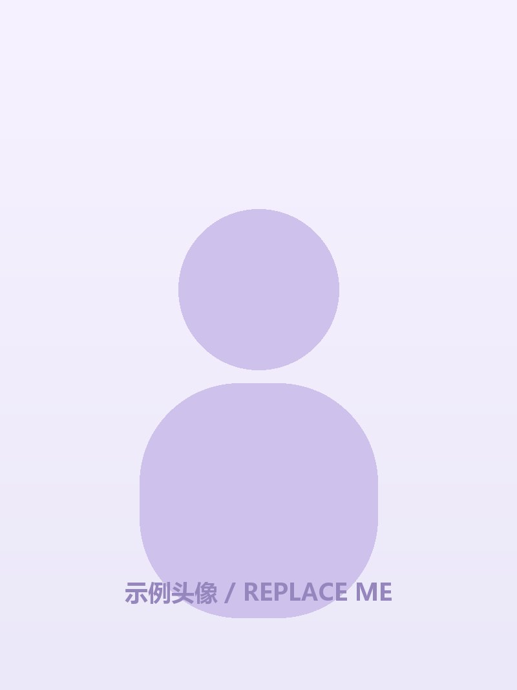

小程序前端
微信小程序页面与交互实现，把设计稿落成能点得动的界面；习惯先把状态和边界想清楚，再动手写页面。

img/avatar.jpg
某某大学 · 学院 · 软件工程
我是某某大学软件工程专业的学生，担任班级学习委员和校学生会理事长。 带团队做过一款上线的 AI 小程序，负责前端与整体推进；平时也愿意琢磨测试用例和缺陷。
我的目标很具体：把测试这条路走扎实，从功能测试做起，逐步补上接口与自动化， 然后用项目和作品把这件事说清楚。
不堆名词，只写我真的独立完成过、能讲清楚细节的部分。
微信小程序页面与交互实现，把设计稿落成能点得动的界面；习惯先把状态和边界想清楚，再动手写页面。
带过团队：拆任务、排进度、对接口、催节点。知道一个项目卡住时，通常卡在沟通而不是代码。
正在系统学习测试用例设计、缺陷管理与接口测试；项目里已经习惯上线前把主流程和异常都自己过一遍。
从选题、技术实现到答辩材料，和团队一起把作品完整推到提交。
先拿校赛一等奖，再打进省赛，完整走了一遍选题、方案打磨与答辩。
以《示例项目》参赛，负责前端、团队统筹与产品设计。
走出校园接触真实岗位，理解企业里需求是怎么被提出和验收的。
昵称是同学和队友叫出来的，叫着叫着就成了习惯，连老师也这么叫。 这个名字跟着我参加过每一场比赛，也出现在每一份项目文档的作者栏里。